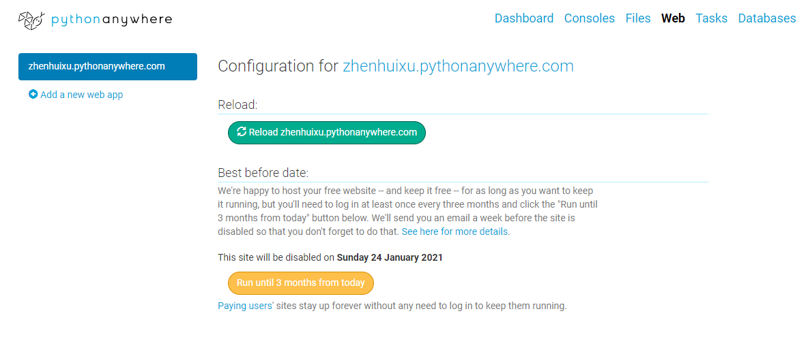
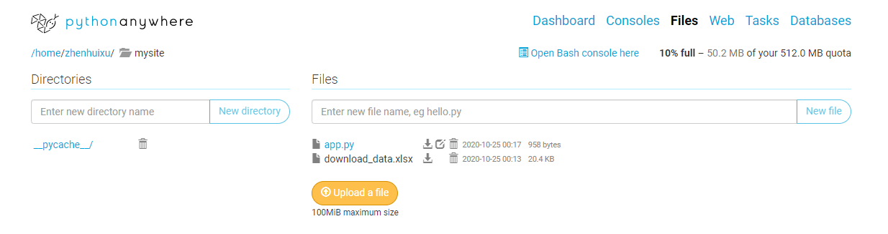
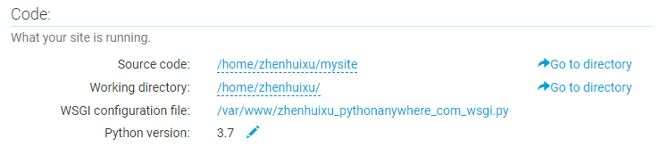

The url of the dashboard is http://zhenhuixu.pythonanywhere.com/
Dataset--Survey of Doctorate Recipients in the US
The dataset includes PhDs awarded in the US through 1987 to 2017. It presents detailed data on the demographic characteristics, educational history, source of financial support, and postgraduation plans of doctorate recepients. Here, we focus on two research questions
- Is there any difference in number of female and male doctorate recipients over time?
- Is there any difference in number of doctorate recipients by major of field of study over time?
Visualizations
The number of science and engineering PhDs in the US has been increasing until now while the number of non-science and engineering PhDs is relatively constant after 1990s. The number of scientific and engineering PhDs is more than 40k in 2017 while the number of non-scientific and engineering PhDs is around 14k in the same year. We can conclude that there is large difference in these two broad majors and the trend over time is significantly different.
Overall, the number of male PhDs awarded is larger than the number of female PhDs awarded in every year recorded. However, the difference in female and male is shrinking every 5 years. The difference in sex largely depends on subjects. In mathematical science, computater sciences and engineering areas, the number of male doctorate recipients is larger than female while in education psychological sciences the female PhDs dominates the overall population.
Rendering Plotly figures on Pelican
Rendering plotly figures on your Github Pages can make your website more interactive and show more information of the data without redundancy. Here, I introduce a very simple method to render plotly figures on Pelican static website. The Pelican plugin can be found here.
- Save your plotly figures as a json file by
write_jsonfunction imported from plotly.io module.
from plotly.io import write_json
import plotly.graph_objects as go
fig = go.Figure()
write_json(fig, "fig.json")
- Add the plugin path to your PLUGINS setting in the pelicanconf.py file.
- Add the plugin as a sub module to your plugin directory.
git submodule add git://github.com/ran404/pelican-plotly.git plugins/pelican-plotly
Deployment of the Dashboard
- Sign up to pythonanywhere by creating a Beginner account.
- On the top bar go to Web > Add a new web app:
- Click on Next.
- Select Flask as the Python Web framework.
-
Choose the Python version you used to develop the app. (Here I use
python 3.7) -
Leave the path by default and click Next.
-
Note this link is what everyone can use to access your web app

- On the top bar go to
Files, in theDirectoriessidebar, click onmysite/(or the directory you specified in the previous step), you can replace theflask_app.pyby the files of your own project. Just to make sure your main dash app file is located inmysite/folder instead of subfolders that you create.

- On the top bar, go to
Consoles. Here, you'll find the Bash console, which is the usual terminal that you'll find in your computer. - Note: you need to specify the version of python you select when creating the web app. An example of installing the
dashpackage is:
pip3.7 install --user dash
- Go to
Webicon on the top bar and in the Code section open the WSGI configuration file.

- Replace the
flask_appto the name of your main dash file, such asapp. - Go back to the
Webpage and reload the files. Now, your app is running 24/7 on the server and everyone can access the web app through the link!
References
- https://towardsdatascience.com/the-easiest-way-to-deploy-your-dash-app-for-free-f92c575bb69e
- https://dash.plotly.com/
- https://ncses.nsf.gov/pubs/nsf19301/data
- https://github.com/ran404/pelican-plotly